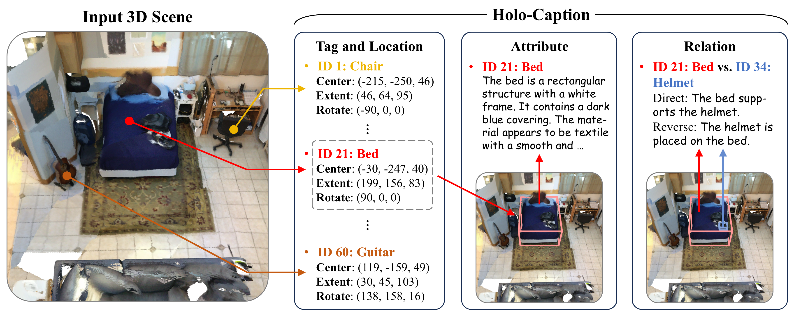
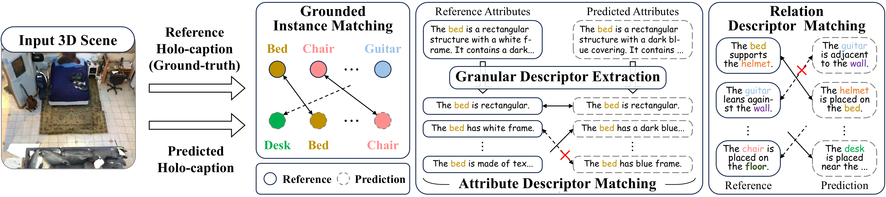
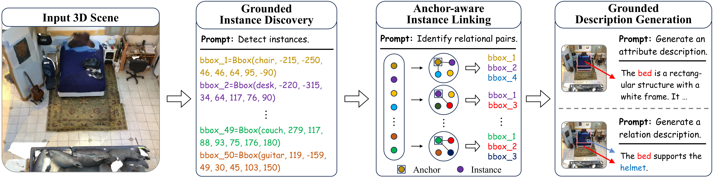
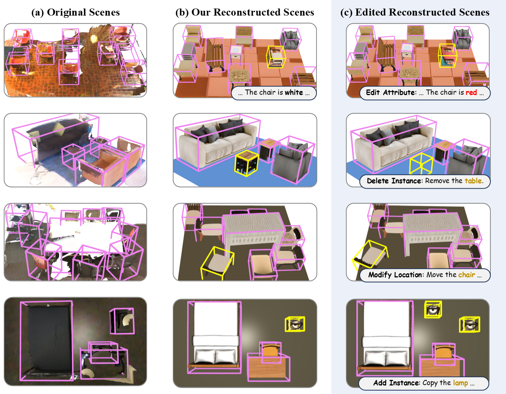

This work introduces holo-captioning, a novel task that strives to seek the text equivalent of 3D scenes. As an initial step, we formulate holo-captioning as generating a structured textual description that comprehensively depicts all entities within a 3D scene, including their semantic tags, spatial locations, attributes, and inter-entity relations.
To tackle this challenging task, we develop HoloEngine, an effective captioning engine for producing detailed descriptions of individual entity instances and instance pairs, and contribute HoloScan, a large-scale benchmark comprising over 15K scenes for training and evaluation. Building upon this foundation, we propose HoloScribe, a model with an instance-aware decoupled pipeline for generating structured holo-captions, together with anchor-aware instance linking for relational instance pairs. We further introduce HoloScore, a comprehensive metric with a human-curated test set for reliable assessment. Experiments show that HoloScribe significantly outperforms state-of-the-art 3D dense captioners and 3D LLM generalists.
Our contributions are listed as follows:
Describing the 3D world with natural language is a fundamental topic in computer vision and natural language processing, benefiting diverse 3D applications such as scene modeling, vision navigation, and robotic manipulation. As a pivotal task in this field, 3D dense captioning aims to simultaneously detect and describe object instances within a 3D scene. However, existing 3D dense captioning methods are constrained by a limited range of object categories and typically produce short, coarse textual descriptions.
Driven by the rapid advances in Large Language Models, recent studies have explored structured linguistic sequences for describing 3D scenes and covering broader categories in an open-vocabulary paradigm. Nevertheless, they primarily focus on detecting architectural layouts and salient objects, overlooking fine-grained entity attributes and inter-entity relations. Motivated by these limitations, this work conceives of finding the text equivalent of a 3D scene, an ambitious yet challenging goal that aims to develop a comprehensive textual description capturing all essential elements within a 3D scene.
In this work, we formulate holo-captioning as generating a structured textual description that comprehensively depicts all entity instances within a 3D scene, including their semantic tags, spatial locations, attributes, and the relations between entities. Unlike previous 3D captioning approaches, our formulation encodes these four dimensions purely in text, resulting in a unified textual description that fully encapsulates the 3D scene. In principle, holo-captioning considers four dimensions as follows:
By considering these four fundamental dimensions, holo-captioning leads to a comprehensive textual description of a 3D scene. Compared to previous structured textual representations, holo-captions not only capture entity categories and locations, but also describe entity attributes and inter-entity relations, thereby enabling comprehensive 3D scene understanding. Notably, holo-captioning requires a single model to directly predict all scene elements in pure text form without relying on additional detectors or segmenters, fostering a more intrinsic alignment between 3D scenes and text.

HoloScore evaluates holo-captions across four dimensions: semantic tagging, spatial localization, entity attributes, and inter-entity relations. It first performs grounded instance matching to align predicted and reference instances, then decomposes long descriptions into granular descriptors, and finally compares attribute and relation descriptors through dual descriptor matching.
HoloEngine is an instance-centric captioning engine that produces structured holo-captions. It projects 3D oriented bounding boxes into multi-view images, prompts MLLMs to describe target instances and instance pairs, and consolidates view-specific descriptions into holistic captions with LLMs. Based on HoloEngine, we construct HoloScan, a large-scale benchmark spanning real and synthetic indoor scenes from ScanNet, 3RScan, Matterport3D, ARKitScenes, and Structured3D. HoloScan contains over 13K training scenes, 619 validation scenes, and 83 human-curated test scenes, covering 734 entity categories across more than 15K scenes.
Comparison with 3D dense captioning and structural description generation benchmarks.
| Data | Type | Box | Category | Scene | Word |
|---|---|---|---|---|---|
| ScanRefer | Real | 18 | 0.7K | 17.9 | |
| Nr3D | Real | 18 | 0.6K | 11.4 | |
| ExCap3D | Real | 84 | 0.9K | 82.8 | |
| ASE | Synthetic | Layout | 100K | - | |
| SpatialLM | Synthetic | 62 | 54K | - | |
| HoloScan | Real & Synthetic | 734 | 15K | 89.0 |
Compared with previous 3D dense captioning benchmarks, HoloScan provides longer and more detailed instance descriptions and encompasses a broader range of entity categories. Moreover, it covers a wider variety of real scenes and sources data from multiple datasets, unlike previous benchmarks that rely solely on a single source (e.g., ScanNet). Additionally, unlike previous structural description generation benchmarks that focus primarily on synthetic scenes, HoloScan contains a substantial number of real-world scenes and provides comprehensive descriptions with fine-grained coverage of attributes and relations.

HoloScribe follows an instance-aware decoupled pipeline. Given a 3D scene in point cloud format, it first discovers grounded entity instances, then identifies relational instance pairs through anchor-aware instance linking, and finally generates grounded attribute and relation descriptions conditioned on the discovered instances. This decomposition lets the model generate long, information-dense holo-captions element by element, while keeping entity localization, attribute description, and relation modeling grounded in a shared textual structure.
(Note: Model names with the suffix "-Tuned" denote models tuned on the training set of HoloScan)
| Model | LLM | Validation Set | Test Set | ||||||||
|---|---|---|---|---|---|---|---|---|---|---|---|
| Tagging | Location | Attribute | Relation | Overall | Tagging | Location | Attribute | Relation | Overall | ||
| Vote2Cap-DETR | - | 32.87 | 17.00 | 2.49 | - | - | 32.50 | 17.71 | 2.70 | - | - |
| Vote2Cap-DETR++ | - | 30.84 | 16.70 | 2.38 | - | - | 31.39 | 17.04 | 2.67 | - | - |
| LEO | Vicuna-7B | 23.34 | 14.25 | 1.53 | - | - | 25.91 | 14.93 | 1.60 | - | - |
| LL3DA | OPT-1.3B | 31.28 | 16.50 | 2.99 | - | - | 31.28 | 16.89 | 3.27 | - | - |
| SpatialLM-Tuned | Qwen2.5-0.5B | 51.73 | 9.94 | 6.74 | 2.60 | 71.01 | 49.82 | 9.23 | 7.01 | 3.57 | 69.63 |
| LL3DA-Tuned | Qwen2.5-0.5B | 31.25 | 16.50 | 10.36 | 4.83 | 62.94 | 31.28 | 16.88 | 9.54 | 3.97 | 61.67 |
| HoloScribe (Ours) | Qwen2.5-0.5B | 60.43 | 22.33 | 22.52 | 11.08 | 116.36 | 61.83 | 22.75 | 23.72 | 8.74 | 117.04 |

We conduct a 3D scene reconstruction experiment to qualitatively demonstrate the effectiveness and practical utility of HoloScribe. Given an input 3D scene, HoloScribe first generates a holo-caption as a textual representation of the scene. We then use Hunyuan3D to generate 3D assets from the semantic tags and attributes of entity instances extracted from the holo-caption. The predicted bounding boxes are further used to refine each instance's size and pose before placing the generated assets in 3D space to assemble the reconstructed scene. As shown in the figure, HoloScribe produces reconstructed scenes that resemble the original scenes, especially in semantic tagging and spatial localization. By modifying the generated holo-caption, the same pipeline can also support scene editing operations such as attribute editing, instance deletion, instance relocation, and instance addition.
To demonstrate the utility of HoloScribe, we deploy it in real-world downstream robotics tasks, including open-vocabulary object navigation and mobile manipulation. In these downstream tasks, HoloScribe generates holo-captions for scenes, from which we extract entity detection results and use them for performing robotics tasks.
@inproceedings{lin2026holocap,
title={Holo-Captioning: Toward the Text Equivalent of 3D Scenes},
author={Lin, Kun-Yu and Bu, Chengke and Li, Zhenguo and Han, Kai},
booktitle={European Conference on Computer Vision},
year={2026}
}